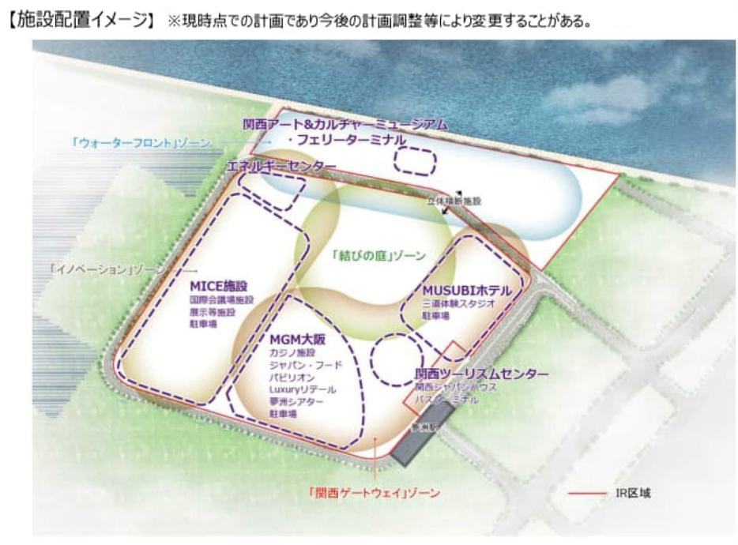
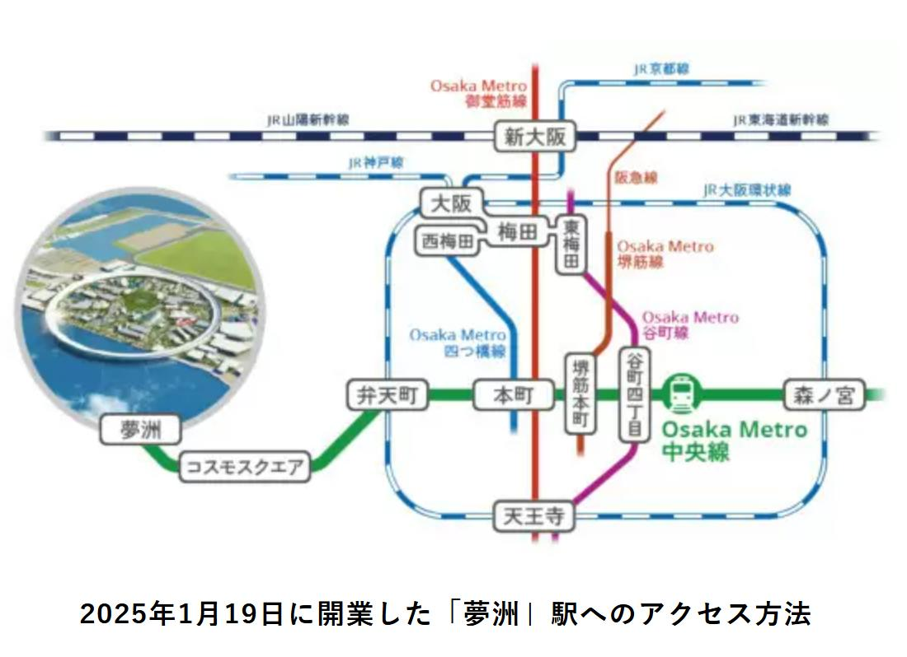

2026年3月現在、大阪・夢洲の統合型リゾート（IR）建設プロジェクトは地上主体施工フェーズへと移行し、首批建築の鉄骨構造が成形を開始した。地盤改良工事は概ね完了し、2030年秋季の開業目標は変わらず維持されている。大阪ベイエリアの不動産市況および長期賃貸需要に対して、本プロジェクトの進捗は引き続き強力な下支え要因となっている。

1. 工事進捗：地盤改良完了と鉄骨構造の成形
2025年4月の起工式以来、夢洲IRの建設は杭打ち・基礎工事を中心とした地下工程を着実に消化してきた。2026年3月時点の最新状況は以下の通りである。
1.1 地盤改良工事の完了
- 液状化対策の完了：夢洲は埋立地であるため、大規模な地盤改良（深層混合処理工法等）が不可欠であった。2026年3月現在、この工程は概ね完了したと報告されており、地上構造物の建設に向けた基盤が整った。
- 基礎杭工事：超高層棟を含む主要施設の基礎杭打ち工事が完了し、建物荷重を支持する強固な地盤構造が確保された。
1.2 地上主体施工フェーズへの移行
- 鉄骨構造の成形開始：2026年3月、IR施設群のうち先行する第一棟において、地上部の鉄骨（S造）フレームの組み立てが本格化している。鉄骨20万トン、鉄筋15万トンを消費する大規模工事の山場を迎えつつある。
- 民間資金による自立的推進：総事業費約1兆2,700億円はMGMリゾーツ・インターナショナルおよびオリックスを中心とする民間企業の自己資金・融資で全額賄われており、財政リスクは限定的である。
- 2030年秋開業目標の堅持：大阪府・市および事業者は2030年秋季の開業目標を公式に維持しており、現時点での工程上の大幅な遅延は報告されていない。
2. 周辺インフラ：地下鉄中央線延伸と調整期

2.1 Osaka Metro中央線の調整期運用
- 夢洲駅延伸の稼働：2025年1月19日に開業したOsaka Metro中央線・夢洲延伸（コスモスクエア〜夢洲 約3.2km）は、2026年3月現在、建設工事関係者の輸送を主体としつつ、本格的なIR開業に向けた運行調整・試験期へと移行しつつある。
- ダイヤと輸送力の最適化：2030年の本格運用に向け、ピーク時輸送力の拡充やホームドア・自動運転システムの整備が順次進められている。
2.2 その他のアクセスインフラ
- IR専用桟橋（海上ルート）：関西国際空港・神戸空港・USJを直結する水上交通ネットワークの整備が予定されており、国際来訪者の多様なアクセス手段を確保する。
- 道路インフラ：夢洲島内の幹線道路整備および周辺湾岸道路の拡充工事も並行して進行中であり、物流・来訪者双方のアクセス向上に寄与している。
3. 不動産市況への影響：ベイエリア資産価値と長期賃貸需要
3.1 大阪湾岸エリアの不動産評価への正の影響
IRプロジェクトが地上主体施工という目に見えるフェーズに進んだことは、大阪湾岸エリアの不動産市況に明確なシグナルを送っている。
- コスモスクエア・咲洲エリアの地価上昇：夢洲に隣接するコスモスクエア・咲洲地区では、IRの具体化に伴い商業地・住宅地ともに地価の上昇傾向が続いている。Osaka Metro中央線の利便性向上が資産価値の底上げに寄与している。
- 此花区・港区への波及：夢洲本島の建設需要増大は、周辺区の商業施設・宿泊施設需要を押し上げており、投資用不動産の問い合わせ増加が観察されている。
- 新築・大規模複合開発との連動：コスモスクエア駅前のEs-Conによる複合開発（2026年8月着工・2030年竣工予定）など、IRの開業タイムラインに合わせた民間投資が活発化している。
3.2 長期賃貸需要の構造的な拡大
- 建設・運営人材の流入：IRの建設フェーズにおける技術者・作業員、さらに開業後の運営スタッフ（ホテル・カジノ・MICE施設等）の大規模雇用創出が、湾岸エリア周辺の賃貸住宅需要を長期的に押し上げる主要因となっている。
- インバウンド対応宿泊需要：2030年以降の年間来訪者数は最大2,000万人が試算されており、短期滞在型の賃貸・ホテル需要も構造的に増加する見通しである。
- 法人・サービスアパートメント需要：MGM・オリックスグループの関連企業や国際的なゲーミング・ホスピタリティ業者の大阪進出に伴い、中長期の法人賃貸・サービスアパートメント需要の拡大が見込まれる。
4. まとめ：2026年3月の戦略的評価
地上主体施工フェーズへの移行は、夢洲IRプロジェクトが「計画」から「実体」へと転換した決定的な局面を意味する。地盤改良完了・鉄骨架設開始・地下鉄インフラの調整期移行という三つの指標が重なる2026年3月は、大阪湾岸エリアへの不動産投資・長期賃貸戦略を再評価する好機である。弊社では引き続き本プロジェクトの進捗を注視し、クライアントの資産形成および事業展開における最適な意思決定を支援してまいります。